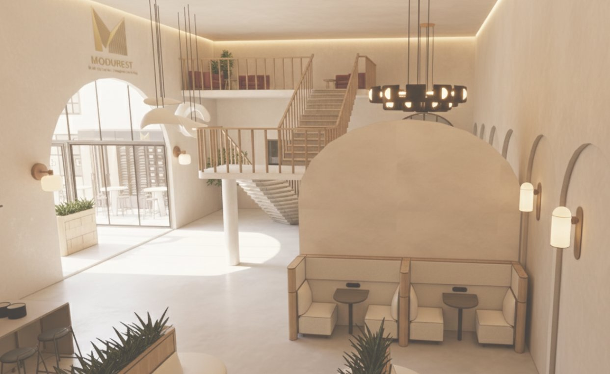
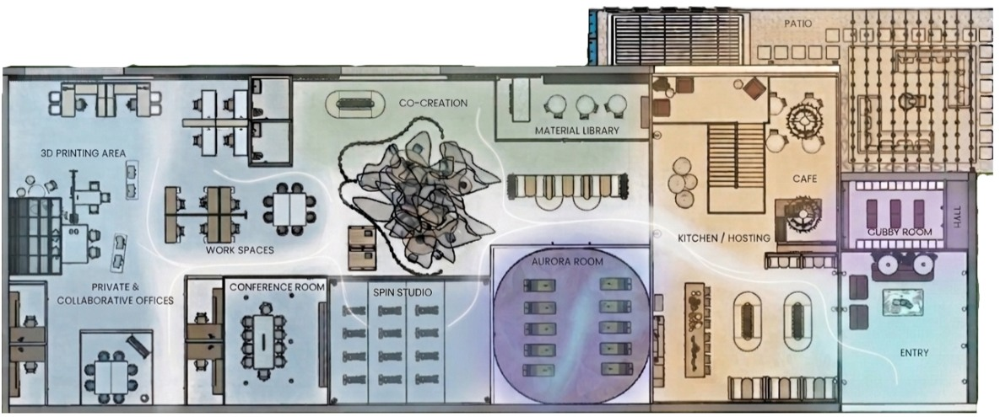
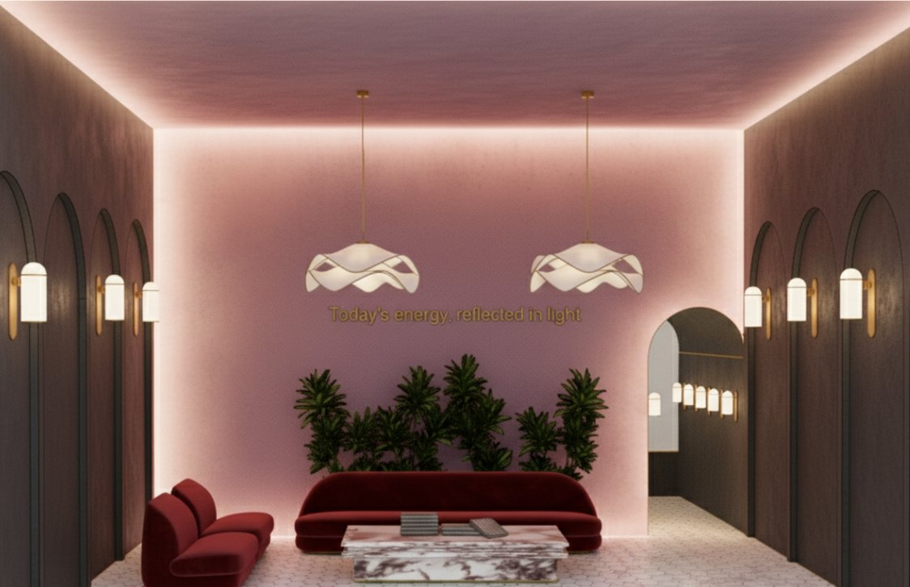
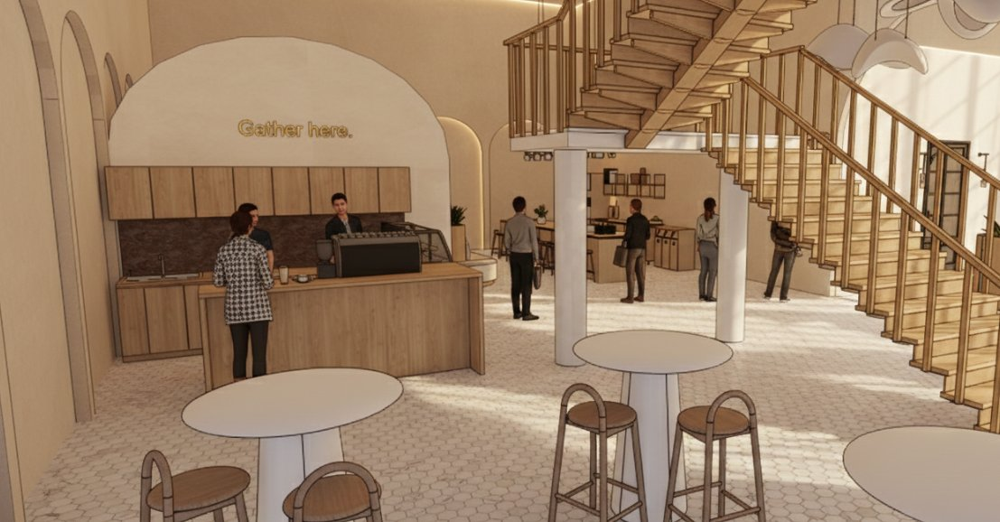
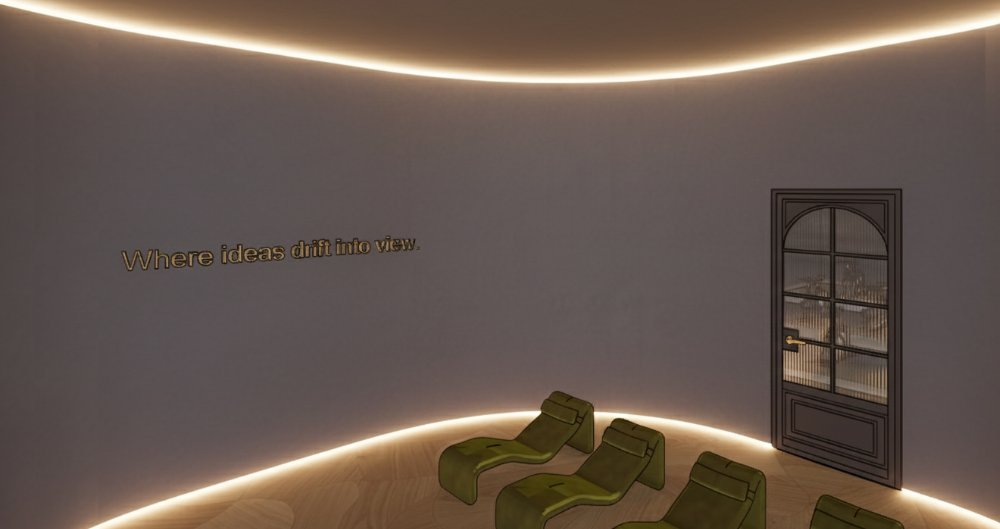
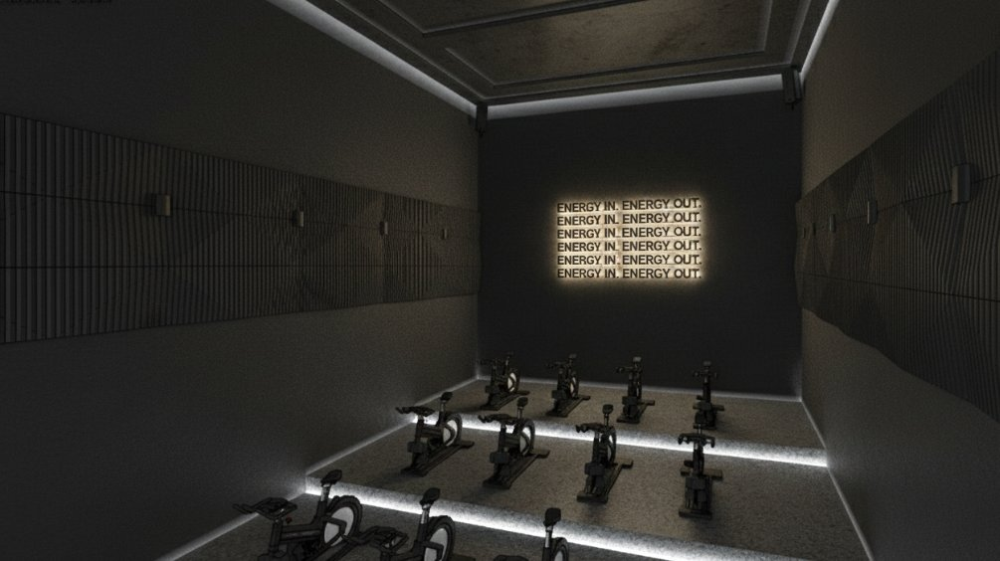
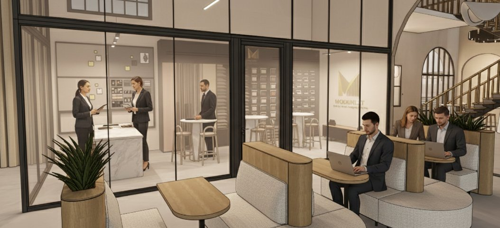
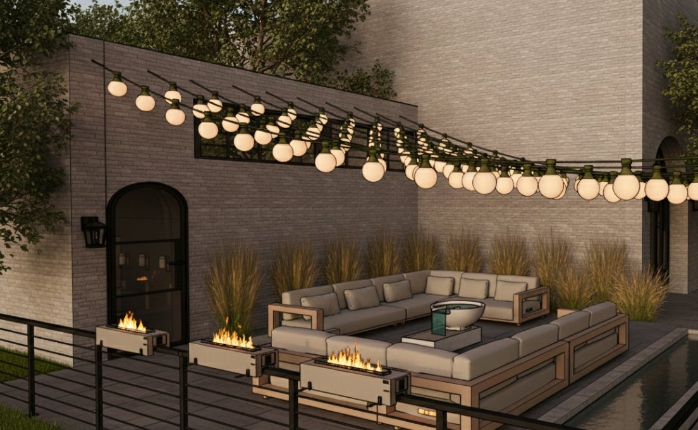

Project 02 · Ranunculus
The Future of Workplace Design
Inspired by the Aurora Borealis, this workplace explores how light, movement, and flexible spatial zones support focus, collaboration, and restoration throughout the workday.
- Brand
- Modunest
- Concept
- Aurora Borealis
- Type
- Independent Academic Project · Workplace Interior Design
- Date
- Tools
- SketchUp, Enscape, AI-Assisted Post-Production

Overview
Modunest is a future-focused workplace concept shaped by the shifting energy of the Aurora Borealis. Through thoughtful spatial planning, atmospheric lighting, and wellness-centred environments, the design supports different ways of working, gathering, and recharging.
The challenge was to encourage people to return to the office by creating a workplace they’d genuinely enjoy spending time in. Visiting Teknion helped shape my approach: seeing its quiet workspaces, collaborative environments, comfortable seating and welcoming communal kitchens changed how I thought about office design. Just as the aurora constantly changes, people’s energy and needs shift throughout the workday, and Modunest is designed to change with them.
Concept
The Aurora Borealis inspires a sequence of spaces that transition between energy and calm. Luminous details, warm materials, and varied spatial experiences respond to the changing rhythms of the workday.
Spatial planning

Aura Legend
Selected spaces






Looking Back
When I started Modunest, I had never worked in an office, and most of the workplaces I’d seen felt like rows of cubicles. Visiting Teknion completely changed my perspective. Its mix of quiet spaces, collaborative areas, comfortable seating and welcoming kitchens showed me how an office could feel more like a community.
With the challenge of encouraging people to return to the workplace, I wanted to create somewhere people would actually enjoy spending their day. Seeing the Northern Lights unexpectedly close to home inspired the idea of constantly changing energy, much like how some days call for focus and quiet, while others are filled with conversation and creativity. I explored spaces that could support those changing needs, including a café and spin studio to make everyday routines easier.
Looking back, this project taught me to think beyond one fixed idea of how people work. If I developed it further, I’d want to hear from people with different work routines to better understand how they’d use the spaces.